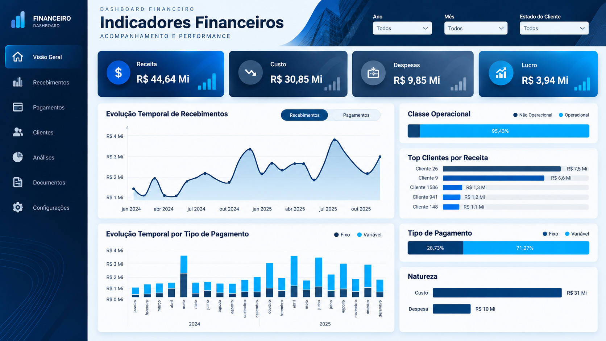

Objetivo da análise
Facilitar a leitura dos principais componentes financeiros e a identificação de variações que afetam o resultado.
Visão gerencial de desempenho financeiro que reúne receitas, custos, despesas e lucro para tornar mais clara a composição do resultado de uma operação.
Objetivo, organização das informações e principais leituras disponíveis no painel.
Facilitar a leitura dos principais componentes financeiros e a identificação de variações que afetam o resultado.
Organização de indicadores financeiros em uma visão consolidada. As fontes e as rotinas de transformação não estão documentadas nas imagens do projeto.
Estruturação de indicadores e visualizações no Power BI para leitura de resultado, composição de gastos e acompanhamento gerencial.
A leitura integrada permite verificar se a evolução da receita é acompanhada por crescimento de custos e despesas, oferecendo contexto para avaliar rentabilidade.
